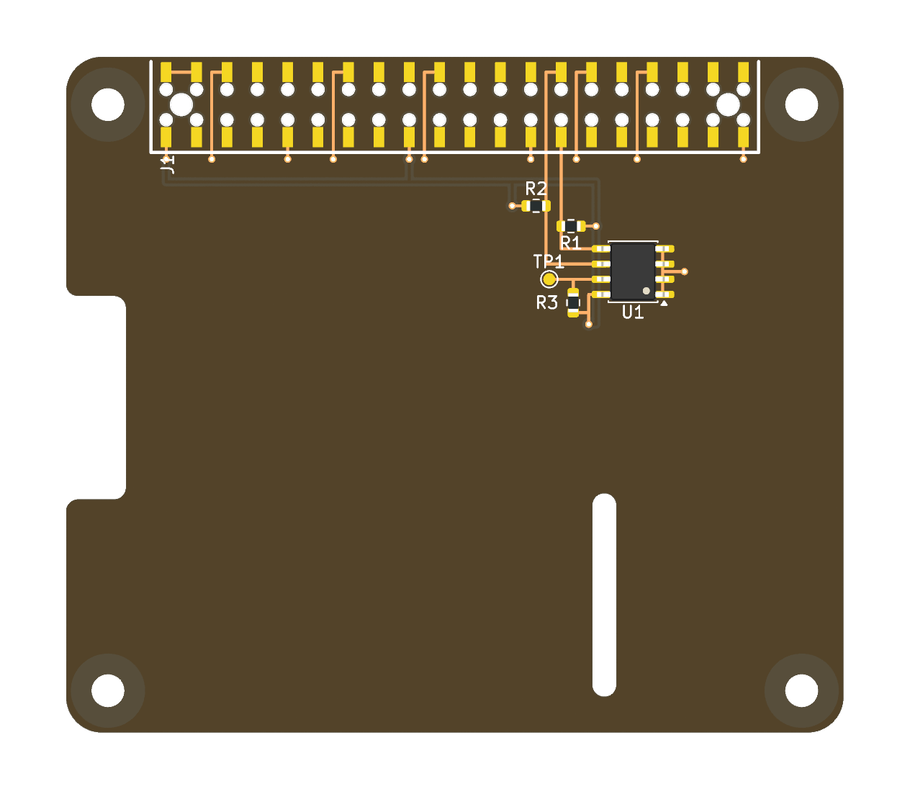

A 65 mm x 56.5 mm board to the Raspberry Pi HAT mechanical specification: the board outline with the display flex notch, the optional camera flex slot, four mounting holes and a Samtec HLE-120-02 surface-mount pass-through GPIO socket (J1).
The schematic holds the 40-pin GPIO connector with its power pins wired to +5V, +3V3 and GND, and a global label on each of the other 26 GPIO pins named for its BCM number (GPIO2 to GPIO27). Place the same label anywhere in the design to use a pin.
It also holds the ID EEPROM the HAT+ specification requires: a CAT24C32 at address 0x50 on ID_SD and ID_SC, with 3.9k pull-ups, 100n decoupling, and write protect held high through 1k. Pull test point TP1 low, or bridge solder jumper JP1, to write it. Delete U1, R1-R3, C1, TP1 and JP1 if the board is not to be a HAT+, and leave ID_SD and ID_SC unconnected.
The symbol and the footprints are in the project's own
RPi_Hat libraries, so nothing else has to be installed.
The socket puts each pad 0.127 mm from the hole its pin passes through, under this board's 0.25 mm hole clearance. The project's design rules allow that gap between the socket's own pads and holes and nowhere else; check that your fabricator can hold it before ordering.

Derived from RPi_Hat_Template by Dave Vandenbout. MIT licence.